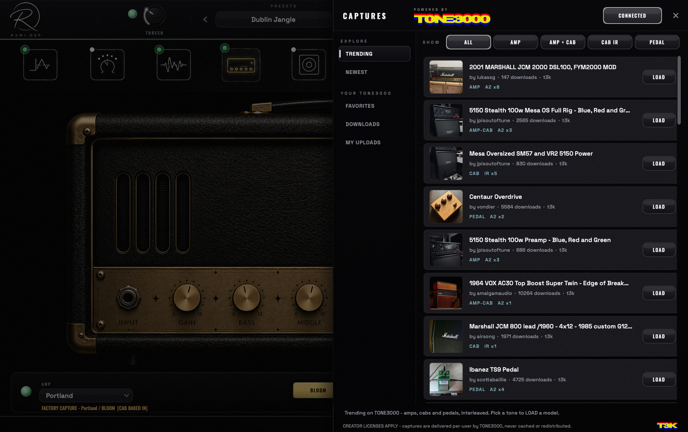

01
Camden
BRITISH CHIME
The chime that built the British Invasion — and the delay-soaked stadiums after it. One chimey British combo, pushed three ways.
- 01Clean
- 02Driven
- 03Max
REMI DSP PRESENTS · THE ALL-IN-ONE GUITAR RIG
FULL VERSION · NO ACCOUNT · NO TRIAL TIMER · HEAR IT IN YOUR BROWSER FIRST


3 AMPS · 6 VOICES · CAPTURED FROM REAL RIGS
The Live Rig
The whole rig also runs live in a browser tab — the same captured heads, the dual-engine delay, the shimmer reverb, a multitrack looper — nothing to download, nobody to sign up to.
Press Play It Live and the rig opens right here in your browser — a demo track plays through it even with no guitar plugged in, and your own interface takes over the moment you're ready.
THE PART THE OTHERS PUT IN THE FINE PRINT
No iLok. No per-amp upsell. No trial timer counting down in the corner. Download it, plug in, keep it — every amp, every pedal, every format. And if you can't install today, the same rig plays live in your browser.
MAINE IN MOTION · 14 S LOOP · SILENT
Captures
Maine's amps are NAM captures — the open Neural Amp Modeler format. Any .nam file you already own drops straight in and plays, at the rate it was trained at.
And you don't have to go hunting for them. The TONE3000 browser is built into the window: filter by amp, amp + cab, cab IR or pedal, hit LOAD, and the capture lands in the amp slot — saved with your preset like anything else.

THE CAPTURES DRAWER — AMP · AMP + CAB · CAB IR · PEDAL
Capture playback is built on Neural Amp Modeler (MIT). Browsing is Powered by TONE3000 — captures are delivered per-user, with their creators and licences attached, and are never cached or redistributed by Maine.
The Plugin
Three amplifiers captured from the real things. A pedalboard that reorders itself. A studio strip that finishes the job — and a tuner that locks.
All of it in one plugin, in any order you like. No account, no iLok, no per-amp upsell.

MAINE v1.0.4 — CAPTURE ENGINE · 44.1–96 kHz
The Amplifiers
Six voices across three heads, every one captured from a real, mic'd-up rig — cab baked in, ready the moment you plug in.
3 HEADS · 6 VOICES · 7 CAPTURES · ONE WINDOW
The Pedalboard
Ten slots, any order — drag a block, rewire the rig. Every pedal hand-drawn, photoreal, built from scratch.


The Studio Strip
Your tone lands finished, not raw: a REMI 4000 console EQ — E-series curves, 18 dB/oct filter — into a 2026 FET compressor with a live VU needle. The end of the chain, the start of a record.
The Cab
A straight impulse-response loader — drop in any IR and set the level. Nothing baked on top, nothing coloured in the way: your cab, exactly as captured.

Specs
Download
Download, install, and plug in. No account required — the full version, every format.

CAMDEN — THE WHOLE RIG IN ONE WINDOW
MACOS 11+ · INTEL & APPLE SILICON
Download installerOne installer · App + AU + VST3 + AAX
WINDOWS 10 / 11 · 64-BIT
Download installerOne installer · Standalone + VST3
Heads up — the Windows installer isn't code-signed yet, so Windows SmartScreen may pop up when you run it. Click More info → Run anyway to install. AAX for Pro Tools isn't supported on Windows at this stage — it ships on macOS only for now.
NO ACCOUNT · NO SIGN-UP